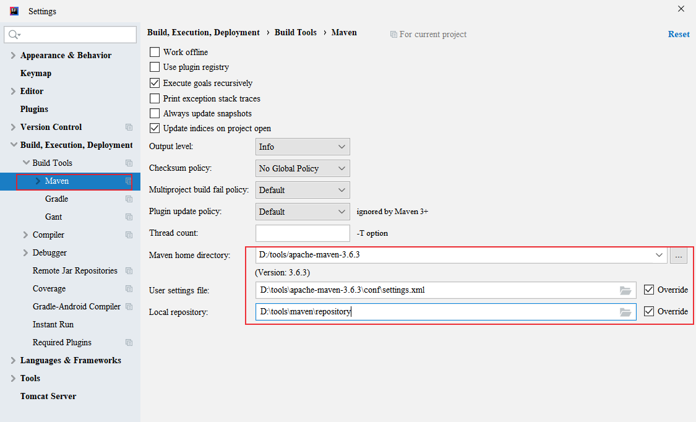

通常一个Java项目会引用大量的 jar 包，而jar 包之间可能存在各种依赖关系，如果运行Java项目时仅使用classpath 参数来管理jar包会非常不方便，此外，在项目编译、打包、升级、发布都会非常繁琐。Maven就是一个可以用来管理jar包的工具，可以用它来构建和管理任何基于java的项目，比如代码编译、打包、项目模块化管理、依赖管理等，下面来介绍Maven的安装及配置方法。
Maven简介
maven 包括两部分：Maven 服务端和 Maven 客户端。
服务器端叫做 maven repo，或者 nexus server。 所有 jar 包都发布到这个仓库，是存放 jar 包的仓库。仓库里每个 jar 包，都有一个唯一的 id， id 是由三部分组成的：group id， artifact id 和 version。
为了避免每次都从服务器下载jar包，maven 会把下载好的jar包放在本地的文件夹（local repo），下面介绍Maven 客户端的安装配置方法。
Maven 客户端安装
Centos7 安装maven
1. 下载
apache maven 下载地址：https://maven.apache.org/download.html
2. 新建maven目录
1 | [root@Server local]# mkdir maven |
3. 配置环境变量
1 | vim /etc/profile |
将下面这两行代码拷贝到文件末尾并保存1
2MAVEN_HOME=/usr/local/maven/apache-maven-3.6.3
export PATH=${MAVEN_HOME}/bin:${PATH}
重载环境变量1
source /etc/profile
4. 查看版本
1 | [root@Server maven]# mvn -v |
5. 添加阿里云镜像
配置指南：https://developer.aliyun.com/mvn/guide
加速依赖包下载，在settings.xml添加阿里云镜像1
vim /usr/local/maven/apache-maven-3.6.3/conf/settings.xml
找到 <mirrors></mirrors> 标签对，添加代码1
2
3
4
5
6<mirror>
<id>aliyunmaven</id>
<mirrorOf>*</mirrorOf>
<name>阿里云公共仓库</name>
<url>https://maven.aliyun.com/repository/public</url>
</mirror>
6. 指定下载资源位置
1 | <localRepository>/usr/local/maven/repository</localRepository> |

7. 指定JDK版本
1 | <profile> |
Windows 安装Maven
1. 检查 Java
java -version
2. 下载，解压
地址：https://maven.apache.org/download.cgi
3. 设置 Maven 环境变量
新建系统变量 MAVEN_HOME：
编辑系统变量 Path，添加变量值：;%MAVEN_HOME%\bin
4. 查看maven版本
mvn -version
5. 添加阿里云镜像
和前面一样，配置阿里云镜像。maven安装目录下的conf/settings.xml文件，在<mirrors></mirrors>标签中添加mirror子节点：
1 | <mirror> |
6. 指定下载资源位置
仓库会默认下载到 C:\Users\{用户名}\.m2\repository 下，可以在conf/settings.xml文件中配置：
1 | <localRepository>D:/tools/maven/repository</localRepository> |
7. IDEA 的 maven settings 配置
设置文件默认为 C:\Users\{用户名}\.m2\settings.xml
IntelliJ IDEA的 maven settings 配置如下：

8. Vscode配置Maven
安装扩展包：Extension Pack for Java
配置vscode设置文件文件settings.json，添加：
1 | "java.configuration.maven.userSettings": "D:/tools/apache-maven-3.6.3/conf/settings.xml", |
创建一个简单的 Maven 项目
下面是在IDEA中创建Maven 项目的例子。
创建新 maven 项目
下面使用maven创建一个Web项目
1. 新建项目
点击【File】 —> 【New】 —> 【Project…】

点击【Next】
点击【Next】
点击【Next】
点击【Finish】
开启自动导包
等待maven下载依赖…..
初始化完成后会生成如下目录结构：
2. 手动创建目录
点击【File】—> 【Project Structure】，选择【Modules】
其中：
- src/main/java —— 一般存放开发代码
- src/main/resources —— 存放项目资源文件
- src/test/java —— 存放单元测试代码
- src/test/resources —— 存放测试资源文件
3. 配置Tomcat容器
点击Add Configuration
4. 运行
点击运行
访问 http://localhost:8081/webdemo

导入现有的 maven 项目
在pom.xml目录下，执行mvn install -U 会下载jar包。
参考文档：
- apache maven 安装：https://maven.apache.org/install.html
本文标题:Maven 安装和配置方法详解
文章作者:hiyo
文章链接:https://hiyongz.github.io/posts/java-maven-install-and-configure/
许可协议:本博客文章除特别声明外，均采用CC BY-NC-ND 4.0 许可协议。转载请保留原文链接及作者。